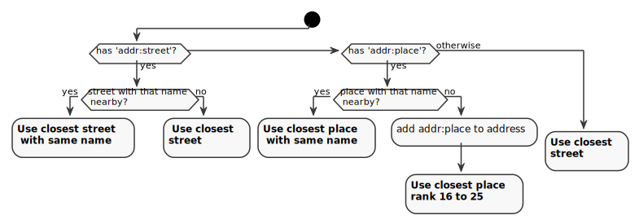

Indexing Places🔗
In Nominatim, the word indexing refers to the process that takes the raw OpenStreetMap data from the place table, enriches it with address information and creates the search indexes. This section explains the basic data flow.
Initial import🔗
After osm2pgsql has loaded the raw OSM data into the place table, the data is copied to the final search tables placex and location_property_osmline. While they are copied, some basic properties are added:
- country_code, geometry_sector and partition
- initial search and address rank
In addition the column indexed_status is set to 1 marking the place as one
that needs to be indexed.
All this happens in the triggers placex_insert and osmline_insert.
Indexing🔗
The main work horse of the data import is the indexing step, where Nominatim takes every place from the placex and location_property_osmline tables where the indexed_status != 0 and computes the search terms and the address parts of the place.
The indexing happens in three major steps:
-
Data preparation - The indexer gets the data for the place to be indexed from the database.
-
Search name processing - The prepared data is given to the tokenizer which computes the search terms from the names and potentially other information.
-
Address processing - The indexer then hands the prepared data and the tokenizer information back to the database via an
INSERTstatement which also sets the indexed_status to0. This triggers the update triggersplacex_update/osmline_updatewhich do the work of computing address parts and filling all the search tables.
When computing the address terms of a place, Nominatim relies on the processed search names of all the address parts. That is why places are processed in rank order, from smallest rank to largest. To ensure correct handling of linked place nodes, administrative boundaries are processed before all other places.
Apart from these restrictions, each place can be indexed independently from the others. This allows a large degree of parallelization during the indexing. It also means that the indexing process can be interrupted at any time and will simply pick up where it left of when restarted.
Data preparation🔗
The data preparation step computes and retrieves all data for a place that might be needed for the next step of processing the search name. That includes
- location information (country code)
- place classification (class, type, ranks)
- names (including names of linked places)
- address information (
addr:*tags)
Data preparation is implemented in pl/PgSQL mostly in the functions
placex_indexing_prepare() and get_interpolation_address().
addr:* tag inheritance🔗
Nominatim has limited support for inheriting address tags from a building to POIs inside the building. This only works when the address tags are on the building outline. Any rank 30 object inside such a building or on its outline inherits all address tags when it does not have any address tags of its own.
The inheritance is computed in the data preparation step.
Search name processing🔗
The prepared place information is handed to the tokenizer next. This is a Python module responsible for processing the names from both name and address terms and building up the word index from them. The process is explained in more detail in the Tokenizer chapter.
Address processing🔗
Finally, the preprocessed place information and the results of the search name processing are written back to the database. At this point the update trigger of the placex/location_property_osmline tables take over and fill all the dependent tables. This makes up the most work-intensive part of the indexing.
Nominatim distinguishes between dependent and independent places. Dependent places are all places on rank 30: house numbers, POIs etc. These places don't have a full address of their own. Instead they are attached to a parent street or place and use the information of the parent for searching and displaying information. Everything else are independent places: streets, parks, water bodies, suburbs, cities, states etc. They receive a full address on their own.
The address processing for both types of places is very different.
Independent places🔗
To compute the address of an independent place Nominatim searches for all
places that cover the place to compute the address for at least partially.
For places with an area, that area is used to check for coverage. For place
nodes an artificial square area is computed according to the rank of
the place. The lower the rank the lager the area. The location_area_large_X
tables are there to facilitate the lookup. All places that can function as
the address of another place are saved in those tables.
addr:* and isin:* tags are taken into account to compute the address, too.
Nominatim will give preference to places with the same name as in these tags
when looking for places in the vicinity. If there are no matching place names
at all, then the tags are at least added to the search index. That means that
the names will not be shown in the result as the 'address' of the place, but
searching by them still works.
Independent places are always added to the global search index search_name.
Dependent places🔗
Dependent places skip the full address computation for performance reasons. Instead they just find a parent place to attach themselves to.

By default a POI or house number will be attached to the closest street. That can be any major or minor street indexed by Nominatim. In the default configuration that means that it can attach itself to a footway but only when it has a name.
When the dependent place has an addr:street tag, then Nominatim will first
try to find a street with the same name before falling back to the closest
street.
There are also addresses in OSM, where the housenumber does not belong
to a street at all. These have an addr:place tag. For these places, Nominatim
tries to find a place with the given name in the indexed places with an
address rank between 16 and 25. If none is found, then the dependent place
is attached to the closest place in that category and the addr:place name is
added as unlisted place, which indicates to Nominatim that it needs to add
it to the address output, no matter what. This special case is necessary to
cover addresses that don't really refer to an existing object.
When an address has both the addr:street and addr:place tag, then Nominatim
assumes that the addr:place tag in fact should be the city part of the address
and give the POI the usual street number address.
Dependent places are only added to the global search index search_name when
they have either a name themselves or when they have address tags that are not
covered by the places that make up their address. The latter ensures that
addresses are always searchable by those address tags.